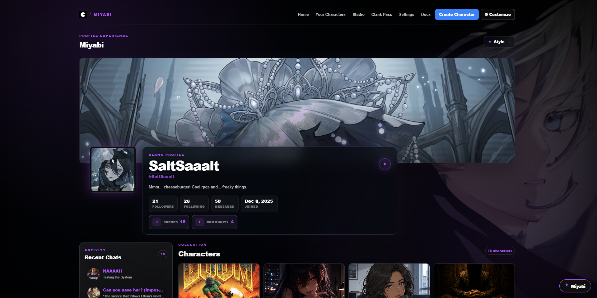

Customize the profile. Not the server.
Profile Atelier applies a Furina-controlled visual layer to one ClankWorld profile you explicitly connect.
The customization is local to your browser. Other Clank users do not see your Miyabi layout, effects or background unless they install and configure their own copy.
Miyabi saves a specific connected profile URL and only activates its profile experience on that target instead of styling every profile you visit.
Tell Miyabi which profile belongs to you.
Open your ClankWorld profile, connect the current profile or paste the profile URL, then save the binding.
Your profile, your world.
Customization activates only when this profile is open.
Reshape the profile layout.
Use a hosted image as the profile backdrop.
Drive highlights and effect color from one selected accent.
Move from sharp panels to softer rounded cards.
Change profile density and the balance between navigation and content.
Turn the profile into a presentation.
Miyabi's effect stack is optional and has a shared intensity control.
Pick a base identity, then add mood.
Atmosphere can add environmental particles and a moving ambient glow at low, medium or high intensity.

A customized profile using Furina's local profile presentation tools.
Export it before you reinvent it.
Save the current Miyabi profile customization as portable data.
Restore a previous exported profile setup.
Return the visual profile engine to its defaults.
Remove the target profile binding without requiring you to destroy your saved customization first.
What Profile Atelier does — and does not — change.
Take your Furina setups with you.
Theme, Full Setup, Story Bible and Miyabi exports each preserve a different kind of data.